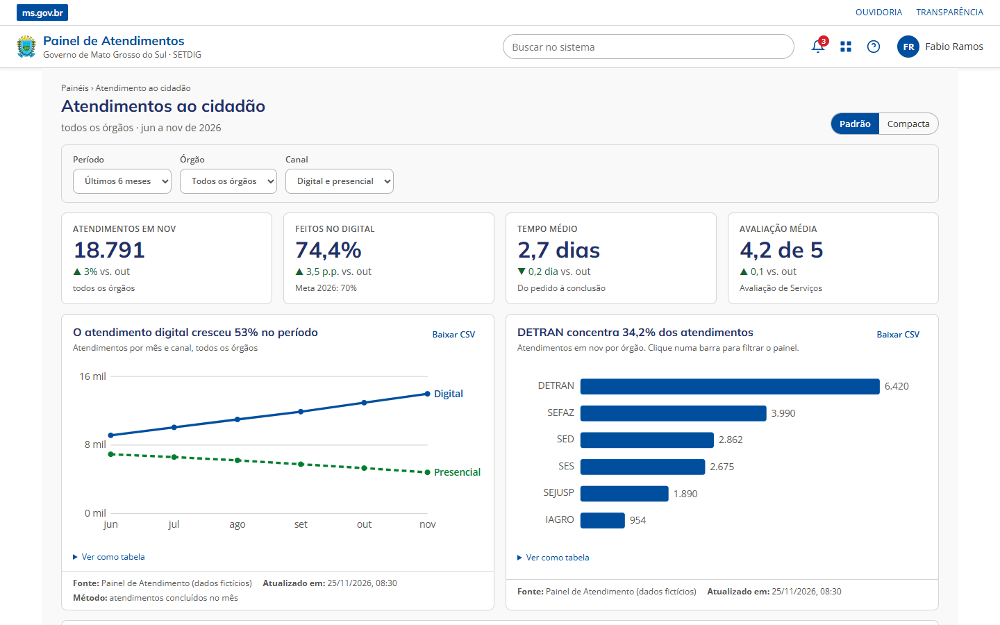

SETDIG · Superintendência de Governo Digital
Um Design System, três contextos
Como o Design System MS pode servir ao portal do cidadão, aos sistemas internos e aos painéis de BI, e como chegamos a essa proposta.
ms.gov.br Laboratório · novembro de 2026 · para UCQI e SGD
A dor
"O Design System parece feito só para o portal."
Cidadão no portalEntra uma vez, faz o pedido e sai. Precisa de calma, passo a passo e texto simples.
Servidor no sistemaPassa 8 horas por dia na mesma tela. Precisa de mais informação por tela, tabelas que operam e ações em lote.
É a percepção dos desenvolvedores, e concordamos. O risco é cada sistema fazer o seu e o Estado perder a identidade.
Como pensamos
Evoluir o DS, não criar outro
| Portal do cidadão | Sistemas internos | Painéis de BI | |
|---|---|---|---|
| Objetivo | Acessar um serviço | Executar atividades | Analisar e decidir |
| Frequência | Pontual | O dia todo | Recorrente |
| Densidade | Confortável | Compacta | Compacta ou padrão |
| Tabelas | Consulta simples | Ordenar, filtrar, agir em lote | Comparar e explorar |
| Prioridade | Fácil de entender | Eficiência | Clareza analítica |
Mesma identidade, mesmos tokens, mesma acessibilidade. Muda a medida e entram os padrões que faltam.
O processo
Do incômodo à prova
- Escutardevs + Duda
- Pesquisar6 referências
- MapearStorybook oficial
- Prototiparlab com os tokens
- Provar2 POCs no ar
CarbonPatternFlygov.br DSUSWDSMOJW3C
O que descobrimos
Não falta componente. Falta padrão.
12componentes que já existem no DS oficial
ds-tableds-paginationds-statusds-drawerds-menuds-app-bards-topbards-kpids-chartds-filter-groupds-multi-selectds-info-system
6padrões e variações que faltam
densidadetoolbarações em lotemaster-detailcontêiner de gráficopaleta de dados
Os padrões
Seis padrões, cada um nas 5 perguntas
Toolbar e filtrosBusca, filtros, até 2 ações; filtros aplicados viram chips.
Ações em loteMarcar vários e agir de uma vez, com "N selecionados".
Master-detailLista e detalhe na mesma tela, sem perder o lugar.
Barra de filtrosPeríodo, órgão, canal: valem para o painel todo.
Contêiner de gráficoTítulo com o achado, fonte, atualização e "ver como tabela".
Paleta de dadosCores de série separadas das cores de situação.
O que é? Quando usar? Quando não usar? Como implementar? Que cuidados de acessibilidade?
POC 1 · Sistema interno

SIGEP: um sistema do governo, com cara de governo
- Moldura do DS: faixa ms.gov.br, barra do sistema, menu lateral e rodapé técnico.
- Listagem com busca, filtros, ordenação e paginação.
- Ações em lote, detalhe ao lado, cadastro com validação, edição e exclusão com "Desfazer".
POC 2 · Painel de BI

Painel de Atendimentos: dado com contexto
- Filtros que recalculam indicadores, gráficos e tabela.
- Título que diz o achado; fonte, atualização e método em todo gráfico.
- Clique na barra filtra o órgão; tabela comparativa ordenável.
Próximos passos
Do laboratório para o Design System oficial
1ValidarCom a UCQI (Thereza e Bruno) e a SGD.
2Levar à X-VIADensidade como token e os padrões que faltam, pelo fluxo do componente novo.
3ApresentarÀ Duda e às equipes da CSIC, junto com a governança.
4TestarNum sistema real de um órgão.
Laboratório: fabioramos-02.github.io/design-system-ms-lab · dados fictícios.